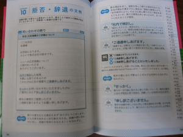

Cult? AJATT. AJATT? Books. Books?
Today’s book: 1-Minute Email-Fu. A book that will quite literally turn you into the shogun of Harlem. Or at least of Japanese business email.
Anyway, 問答無用！No more preliminary jibber-jabber! Let’s get right to it!
Title/Author/Info |
Pros |
Cons |
 考えすぎて書けない人のための1分間メール術 |
|
|
Comments |
||
| There isn’t actually much to say about this book other than it’s a great email reference. Examples are arranged thematically. See that picture of the sample page? Almost the entire book is structured this way — full example email on one page, discussion of key phrases on the other.Let me, I guess, share, by way of illustrative example, how this book has helped me. Over the past few years, I’ve done a lot of translation work (since that’s something easy and fun you can do from home or anywhere else — perfect for both hermit and nomad). Sometimes I would need to turn down project offers (and I did start getting a lot </blowingownhorn>), especially when I was scaling down to concentrate on other things.
Now, the thing about turning down work is that anyone can be all “I’m busy!”. But to communicate the idea that “you have honored me with your request and with the time it took you to contact me, I can’t work on this project right now but maybe another time”, and to do so with neither arrogance nor ambiguity nor excess humility nor verbosity? That, friends, is the big email question, as it were: how do you say “no” nicely and firmly? I mean, I’m probably overthinking all of this; I’m almost certainly overthinking it…but…anyway, that example up there (the sample page) from this book showed me how to do that. How to turn things down in such a way that both sides both feel good and get the message — clarity, concision, good feelings. Hiroshi liked it; I liked it; you’ll like it, too. Random aside: a lot of Japanese etiquette originates from a time when life was slower and speed was considered rude; in fact, in traditional letter-writing, one would apologize for writing letters that were too short — particularly thank-you letters. Now, of course, speed is considered essential, but so is politeness. You need to be polite quickly. There’s no time to say the stuff that comes after “こんにちは”. This, I think, is a big part of what causes many Japanese people and people who simply run Japanese software — like you and I — to think too much when writing email; they’re trying to balance all these things. 1-Minute Email-Fu will help you learn to write concise, effective, clear, polite, dignified Japanese business emails. It’ll save you time and brain cycles. I’m very proud of myself for having found it 😉 . It’s that simple. |
||
{kind=link}
These are the types of books I’m looking for, in japanese. This types of things use japanese to teach you more japanese in japanese. Although having an electronic version would help a lot. I can still make use of it in book-format.
I remember searching for a book that looked on formal letter writing in japanese. I plan on getting those books this year.
Good, good, good, good, and good!
Thank you!
Now I just need to find a real job so I can put this into some practical usage 🙂
(speaking of electronic formats… don’t get me started on the archaic 履歴書 system in place… IT companies, you know, –their life-line depending on electronic versions of everything– demanding hand-frickin-written resumes is just… horse-deer.)
アメド、well, I’m sure… no, I *know* your 日本語 is leaps and bounds above mine, but writing anything in writing, aside from email, and 携帯メール (and youtube comments, and amazon reviews… wait..) is the Japanese excuse (no, the rule!) to use ます form. And なかろうか。And all the other stuff which is never normally used. It almost feels like… ‘hey, if we don’t use it here, we’ll never use it!’ so it’s good practice. Just like starting the beginning of every letter with an irrelevant comment about the weather. 最近雨が多くて来ましたね。:)
@Jaybot 7
Yea I know, my 日本語 is awesome!…….
Nowadays I try to keep everything formal in Japanese. Although, nowadays I know so much slang it isn’t funny……
Those types of books I just want to use a tool to do stuff outside my computer, so I can for example read it outside when I’m at school,etc,etc. Although I might as well invest in an ipod for it’s large space and put a lot of japanese stuff in there instead. I like to keep my options open to everything.
My next investments(in terms of buying are): jp games,ipod classic, more jp novels/manga, jp texts(books for teaching formal letter writing,etc) and lastly some jp dramas to go along with all that.
Let’s get some Chinese book reviews!
What? Praise going around and I’m not getting a slice? Send some of that sweet stuff my way. (But seriously, does anybody get addicted to Japanese people on the internet praising your language skills? It can’t be healthy…)
Really cool looking book. Do want! I had a series of email exchanges with a Japanese uni proff. a few months ago, and while I got by with a bit of polite+, some knowledge of honorific/humble language would have been really helpful.
Also, thanks for reminding me that I gotta get me a piece of this translating action. Two more months before my teaching job is over, and then I gotta survive somehow for four and a half months before I come to Japan. NOT doing crappy work that requires that I use only English is a dream.
I was happy with the praise I was getting all over the net until I got a Japanese friend to start tutoring me.
She says I’m ‘basic’ level and I’m worse than most of the people she tutors.
やった！
My Waseda educated friend steals my slippers without asking. Coincidence? I think not.
Hey, if you’re up for it, could you maybe talk some more about this #scheduling you’re ranting about <== over there on twitter. I've been reading a lot of Cal Newport’s Blog but I’m interested in your opinion.
And though she was not prissy or undersexed, I do know what you mean.
ぴーす
tom
Where’s the ‘fu’ from? Isn’t it ‘1-Minute Email Jutsu’?
By the way, if I just legitimately corrected Khatz’s Japanese, I win this thread 😀